Each picture flips between A, the exact profile (the approved v2 render, bit-identical to the goldens) and
B, the final profile once a second; hover or press to hold one. The face is shown at 1:1 output pixels.
The change to look for: the final profile draws the face once per frame (from quantised parameters), so an expression
that changes within one frame is no longer smeared across the shutter (blinks and eye pops still are); the face still moves
and blurs with the body.
min PSNR
mean PSNR
min face PSNR
face SSIM mean
face SSIM min
51.91 dB
53.69 dB
46.75 dB
0.99906
0.99865
0.00 sPSNR 54.19 dB · face 59.07 dB · face SSIM 0.99956 · max |Δ| 28 · 16.7 % px differ
A exactB finalA exact · face 1:1B final · face 1:1|A − B| × 8
0.20 sPSNR 53.95 dB · face 55.70 dB · face SSIM 0.99946 · max |Δ| 23 · 16.8 % px differ
A exactB finalA exact · face 1:1B final · face 1:1
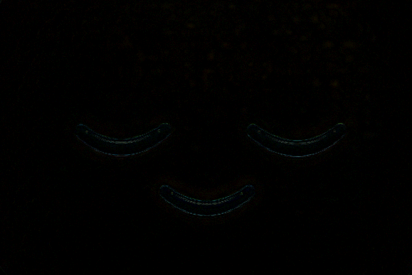
|A − B| × 8
0.40 sPSNR 54.23 dB · face 51.73 dB · face SSIM 0.99934 · max |Δ| 20 · 15.7 % px differ
A exactB finalA exact · face 1:1B final · face 1:1
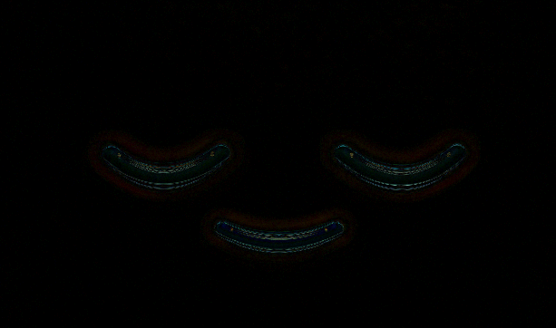
|A − B| × 8
0.60 sPSNR 55.04 dB · face 52.54 dB · face SSIM 0.99881 · max |Δ| 19 · 17.6 % px differ
A exactB finalA exact · face 1:1B final · face 1:1
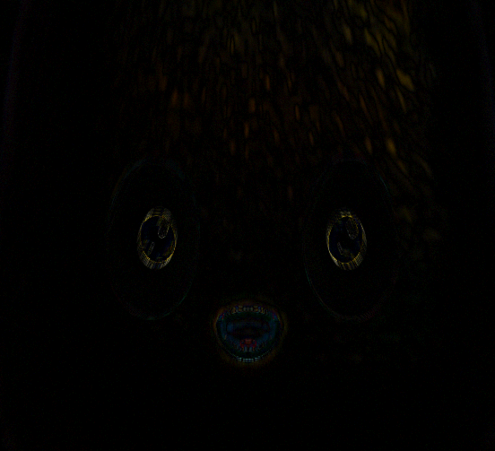
|A − B| × 8
0.98 sPSNR 54.93 dB · face 50.90 dB · face SSIM 0.99931 · max |Δ| 45 · 15.6 % px differ
A exactB finalA exact · face 1:1B final · face 1:1
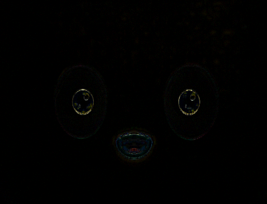
|A − B| × 8
1.10 sPSNR 54.72 dB · face 52.64 dB · face SSIM 0.99889 · max |Δ| 17 · 19.1 % px differ
A exactB final
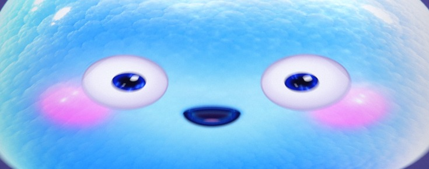
A exact · face 1:1B final · face 1:1
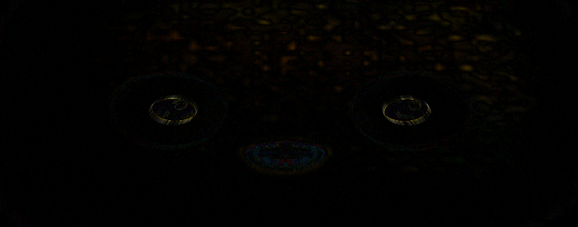
|A − B| × 8
3.20 sPSNR 52.48 dB · face 47.75 dB · face SSIM 0.99865 · max |Δ| 44 · 20.3 % px differ
A exactB finalA exact · face 1:1B final · face 1:1
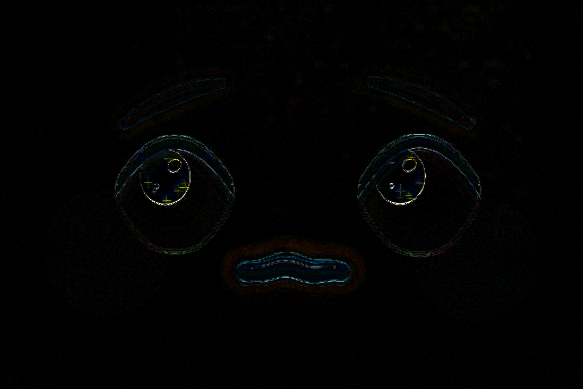
|A − B| × 8
4.50 sPSNR 52.76 dB · face 48.47 dB · face SSIM 0.99886 · max |Δ| 52 · 17.1 % px differ
A exactB finalA exact · face 1:1B final · face 1:1
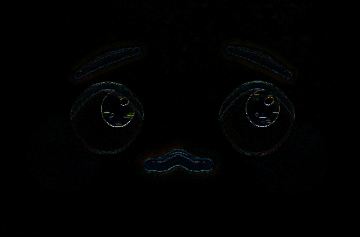
|A − B| × 8
6.50 sPSNR 52.95 dB · face 48.77 dB · face SSIM 0.99896 · max |Δ| 47 · 16.1 % px differ
A exactB finalA exact · face 1:1B final · face 1:1
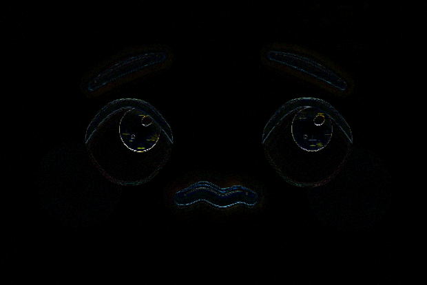
|A − B| × 8
7.00 sPSNR 53.88 dB · face 50.73 dB · face SSIM 0.99917 · max |Δ| 48 · 17.9 % px differ
A exactB finalA exact · face 1:1B final · face 1:1
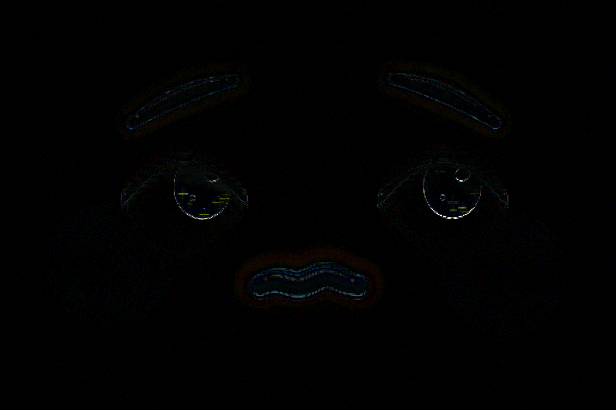
|A − B| × 8
8.90 sPSNR 53.78 dB · face 51.28 dB · face SSIM 0.99896 · max |Δ| 29 · 18.8 % px differ
A exactB finalA exact · face 1:1B final · face 1:1|A − B| × 8
9.60 sPSNR 53.67 dB · face 50.90 dB · face SSIM 0.99880 · max |Δ| 26 · 20.6 % px differ
A exactB finalA exact · face 1:1B final · face 1:1
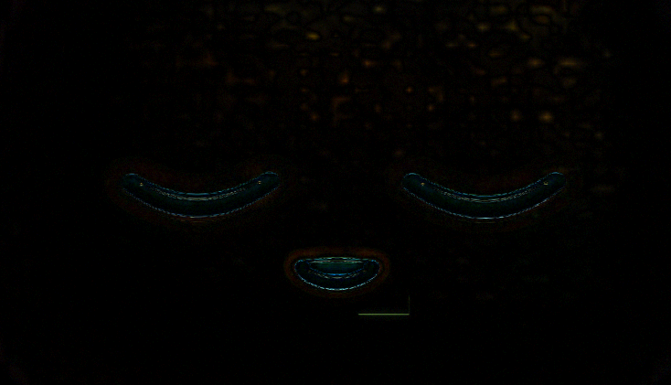
|A − B| × 8
10.50 sPSNR 53.18 dB · face 49.54 dB · face SSIM 0.99903 · max |Δ| 32 · 16.5 % px differ
A exactB finalA exact · face 1:1B final · face 1:1
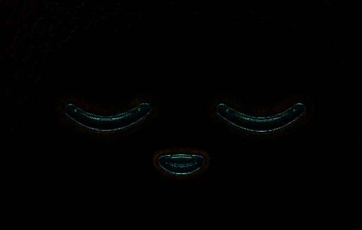
|A − B| × 8
11.90 sPSNR 53.18 dB · face 48.81 dB · face SSIM 0.99892 · max |Δ| 37 · 15.9 % px differ
A exactB finalA exact · face 1:1B final · face 1:1
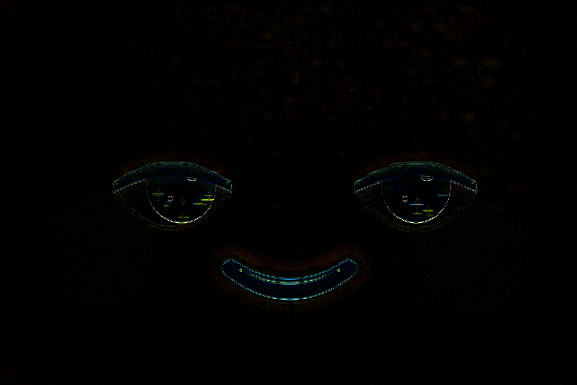
|A − B| × 8
12.80 sPSNR 51.91 dB · face 46.75 dB · face SSIM 0.99865 · max |Δ| 55 · 16.3 % px differ
A exactB finalA exact · face 1:1B final · face 1:1
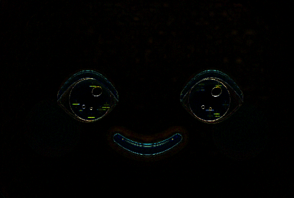
|A − B| × 8
14.90 sPSNR 54.23 dB · face 58.82 dB · face SSIM 0.99955 · max |Δ| 29 · 16.6 % px differ
A exactB finalA exact · face 1:1B final · face 1:1